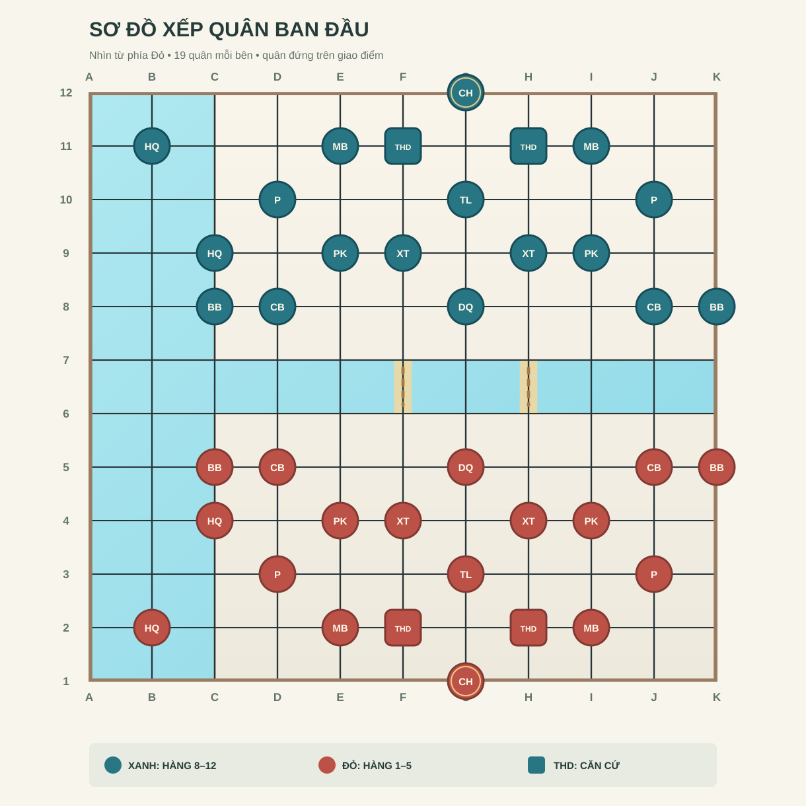

Chiếu hết Chỉ huy
Đối phương đang bị chiếu và không còn nước hợp lệ để thoát.
HƯỚNG DẪN CHƠI • PHIÊN BẢN WEB CỘNG ĐỒNG
Mới chơi? Bắt đầu với cách đọc bàn cờ, nhận biết 11 loại quân rồi thử chọn nước đi trên bàn tập.

Phiên bản đang học: quy tắc của cotulenh.vn theo tài liệu nguồn bạn cung cấp. Luật tác giả năm 2017 được đặt trong mục đối chiếu riêng. Khi chơi, hãy theo trạng thái và các nước đi mà phiên bản đang chơi cho phép.
Mỗi bài giải thích một phần luật và có bài tập ngay bên dưới. Bạn có thể học theo thứ tự hoặc chọn bài mình cần.
Chọn mục bạn muốn xem: bàn cờ, vị trí xếp quân, cách đi hoặc luật chơi.
Bạn có thể thắng bằng cách chiếu hết Chỉ huy hoặc kiểm soát căn cứ đối phương đủ lượt. Đừng đổi quân nếu nước đó khiến Chỉ huy của mình bị chiếu.
Đối phương đang bị chiếu và không còn nước hợp lệ để thoát.
Kiểm soát một Tổng Hành Dinh của đối phương trong 3 lượt liên tiếp.
Ván đấu cũng kết thúc khi đối thủ đầu hàng hoặc hết thời gian ở chế độ có đồng hồ.
Bàn cờ có 11 cột, từ a đến k, và 12 hàng, từ 1 đến 12. Đỏ ở phía dưới và đi trước. Khung bàn rộng 10 khoảng, cao 11 khoảng; khoảng ngang dài hơn khoảng dọc như bàn mẫu. Quân đứng trên 11 × 12 giao điểm. Chọn một giao điểm để xem tọa độ, cầu hoặc căn cứ.
f6 là cột f, hàng 6. Khi bàn xoay góc nhìn, tên tọa độ vẫn giữ nguyên.
f6, f7, h6, h7. Các quân như Pháo, Tên lửa và Phòng không cần chú ý cầu khi vượt sông.
f2, h2, f11, h11. Đây là các Tổng Hành Dinh phải bảo vệ hoặc kiểm soát.
Sơ đồ dưới đây theo vị trí khởi đầu của phiên bản web. Quân đứng trên giao điểm; Xanh ở phía trên, Đỏ ở phía dưới. Rê chuột lên từng quân để xem tên; trên điện thoại, chạm vào quân.
Đọc cột từ a đến k. Đỏ dùng các hàng 1–5; Xanh dùng các hàng 8–12. Phe Đỏ đi trước.
Chỉ huy ở g1 (Đỏ) và g12 (Xanh). Hai Tổng Hành Dinh ở f2, h2 (Đỏ) và f11, h11 (Xanh). Đặt Hải quân ở b2 (Đỏ), b11 (Xanh); Máy bay ở e2, i2 (Đỏ) và e11, i11 (Xanh).
Pháo ở d3, j3 (Đỏ) và d10, j10 (Xanh); Tên lửa ở g3 (Đỏ) và g10 (Xanh). Quân Hải quân còn lại ở c4 (Đỏ) và c9 (Xanh).
Phòng không ở e4, i4 (Đỏ) và e9, i9 (Xanh); Xe tăng ở f4, h4 (Đỏ) và f9, h9 (Xanh). Ở hàng gần sông, Bộ binh đứng tại c5, k5 (Đỏ) và c8, k8 (Xanh); Công binh tại d5, j5 (Đỏ) và d8, j8 (Xanh); Dân quân tại g5 (Đỏ) và g8 (Xanh).
Mỗi phe: 1 Chỉ huy, 2 Tổng Hành Dinh, 2 bộ binh, 2 công binh, 1 dân quân, 2 phòng không, 2 xe tăng, 2 pháo, 1 tên lửa, 2 máy bay và 2 hải quân.
Ảnh quân được tách nền từ bộ ảnh trong Google Drive bạn cung cấp. Vị trí xếp quân được đối chiếu với bàn cờ khởi đầu trên cotulenh.vn. Khi dùng bộ cờ vật lý hoặc luật 2017, hãy kiểm tra sơ đồ đi kèm đúng phiên bản của bạn.
Chọn một nhóm quân, rồi mở từng thẻ để xem hình quân Đỏ, quân Xanh và cách đi cơ bản.
Ảnh quân được lấy từ thư mục Google Drive bạn cung cấp. Tên gọi trong phiên bản web có thể khác tài liệu 2017: Chỉ huy / Tư lệnh, Tổng Hành Dinh / Sở chỉ huy, Phòng không / Cao xạ, Hải quân / Tàu chiến.
Sau khi xem hướng và tầm đi, hãy kiểm tra quân chắn đường, địa hình ô đích và sự an toàn của Chỉ huy.
Thông thường, quân ăn đối phương bằng cách đi tới ô đối phương đang đứng. Ở những tình huống được hỗ trợ, pháo, tên lửa, máy bay, hải quân và đôi khi xe tăng có thể ăn quân địch mà vẫn đứng tại chỗ. Nếu trò chơi đưa ra cả hai lựa chọn, hãy chọn đúng ý định.
Quân bộ không dừng trên ô nước thường; hải quân hoạt động ở nước hoặc ô hỗn hợp. Pháo, phòng không và tên lửa cần lưu ý tuyến cầu khi vượt sông. Máy bay có thể bay qua nước nhưng không hạ xuống nước thường theo mô tả phiên bản web.
Phòng không tạo vùng kiểm soát gần; tên lửa và hải quân cũng ảnh hưởng tới máy bay. Máy bay vượt được vật cản không có nghĩa là an toàn. Xem cả đường bay và vị trí đích.
Xe tăng có thể chở Chỉ huy, bộ binh hoặc dân quân; công binh hỗ trợ các quân nặng phù hợp. Máy bay và hải quân có các tổ hợp chở quân riêng. Khi các quân đi cùng nhau, quân chở quyết định cách di chuyển; khi tách ra, mỗi quân đi theo luật của mình. Hệ thống xác nhận tổ hợp nào hợp lệ.
Không được đi nước khiến Chỉ huy của mình bị chiếu. Hai Chỉ huy đối mặt trên cùng hàng hoặc cột, không có quân chắn, là tình huống phải kiểm tra. Đừng dời quân che chắn khi chưa nhìn thấy toàn bộ đường tấn công.
Chọn loại quân ở bên phải để xem hướng và tầm đi. Quân và các điểm đến nằm trên giao điểm của đường kẻ. Khi chọn Hải quân, bàn tập chuyển thành vùng biển. Bài này chưa xét quân chắn hoặc thế chiếu.
Chọn quân Đỏ ở giao điểm giữa bàn để hiện các điểm trống có thể đi. Chọn quân Xanh để xem vì sao có thể hoặc không thể ăn quân đó. Mỗi quân có một tình huống mẫu. Khi chơi thật, bạn còn phải xét địa hình, vật cản và an toàn của Chỉ huy.
Chọn quân Đỏ để hiện các ô có thể đi.
Hướng đi, tầm đi và các ví dụ được tham khảo từ hướng dẫn phiên bản web và bài luật cơ bản. Khi chơi thật, cần xét thêm địa hình, vật cản, vùng phòng không, đội hình chở quân và an toàn Chỉ huy; trò chơi sẽ xác định hành động nào hợp lệ.
12 tình huống về vật cản, địa hình, ăn quân, không quân và an toàn Chỉ huy. Hãy trả lời trước khi xem lời giải. Quân đứng tại giao điểm; bàn tập thu gọn để tập trung vào một quy tắc mỗi lần.
Mốc 80% là mục tiêu luyện tập, không phải luật chơi. Bài tập dùng các thế cờ cố định theo hướng dẫn phiên bản web cộng đồng; đây chưa phải bộ máy xét mọi nước đi trong một ván.
Chọn phe và độ khó, rồi bấm “Ván mới”. Chọn quân của bạn và một ô được đánh dấu để đi, ăn quân, bắn tại chỗ hoặc phối hợp quân. AI tính nước bằng Minimax và Alpha-Beta Pruning ngay trong trình duyệt.
Đỏ thường bắt đầu từ phía dưới và đi trước. Xem Chỉ huy, căn cứ và tuyến cầu của hai bên.
Quan sát các điểm được giao diện đánh dấu; đọc tên quân và hướng đi trước khi bấm đích.
Tầm và đường đi, khả năng đứng ở địa hình đích, rồi mức an toàn của Chỉ huy và căn cứ.
Nếu có lựa chọn tiến vào, bắn tại chỗ hoặc giữ/tách quân được chở, chọn theo mục đích.
Quan sát đồng hồ, vùng phòng không, cầu, bộ đếm giữ căn cứ và nước đe dọa của đối thủ.
Bốn lưu ý này giúp bạn tránh bỏ sót quân hoặc địa hình khi đang tập trung tấn công.
Kiểm tra vùng Phòng không của đối phương trước khi đưa Máy bay vào. Giữ quân Phòng không gần các ô cần bảo vệ.
Đừng dồn nhiều quân vào một ô cầu. Để sẵn quân hỗ trợ ở phía sau trước khi vượt sông.
Đặt Pháo ở nơi có thể hỗ trợ quân tiến lên. Trước khi ăn quân, xem đối phương có thể ăn lại bằng quân nào.
Khi tấn công trên bộ, vẫn cần nhìn Hải quân, Máy bay và Tổng Hành Dinh của cả hai phe.
Chọn đáp án để xem giải thích. Bạn có thể làm lại bất cứ lúc nào; kết quả chỉ lưu trên trình duyệt này.
Trang này ưu tiên luật của cotulenh.vn. Bảng dưới đây chỉ ra những chỗ khác với tài liệu của tác giả năm 2017 để bạn tra cứu đúng phiên bản.
| Nội dung | Phiên bản web cộng đồng | Tài liệu 2017 |
|---|---|---|
| Quân chỉ huy | Chỉ huy | Tư lệnh |
| Căn cứ | Tổng Hành Dinh; giữ 3 lượt liên tiếp có thể thắng | Sở chỉ huy, mô tả như công sự |
| Điều kiện thắng | Chiếu hết, giữ căn cứ, đầu hàng, hết giờ | Có nhiều thể thức và điều kiện tiêu diệt lực lượng riêng |
| Vượt sông | Xét ô đất, nước, hỗn hợp và cầu theo hệ thống | Mô tả ngầm cạn và một số ngoại lệ vượt nước sâu |
| Chở quân | Quân chở và quân được chở; có thể đi cùng hoặc tách ra theo luật | Các tổ hợp và tình huống riêng trong luật 2017 |
Trang web này là học liệu được biên soạn từ tệp HTML bạn cung cấp. Các bài tập chỉ minh họa kiến thức cơ bản và không kiểm tra được mọi nước đi trong ván thật. Khi chơi, hãy áp dụng luật của phiên bản bạn đang sử dụng.